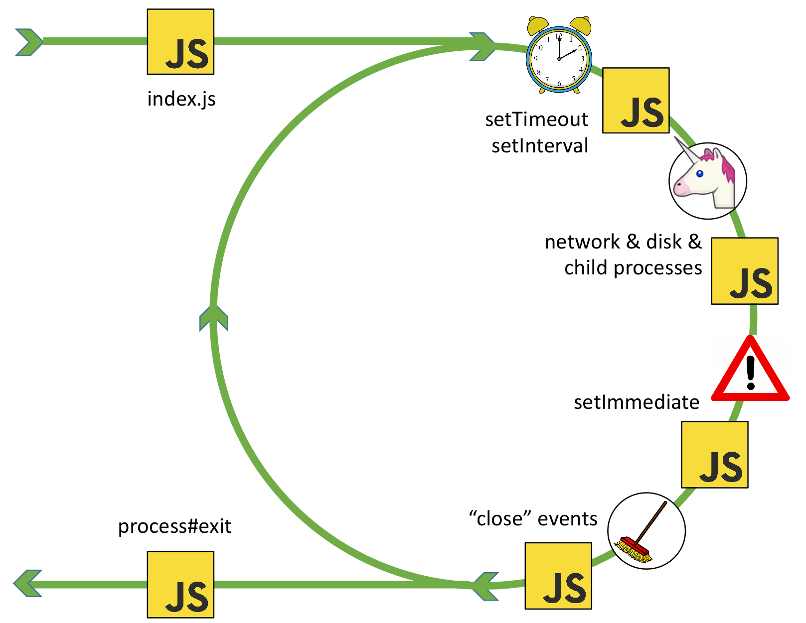

The event loop
"The event loop is what allows Node.js to perform non-blocking I/O operations by
offloading operations to the system kernel whenever possible."
-
The Event Loop is one of the most important aspects to understand about Node.js.
- [..] it explains how Node.js can be asynchronous and have non-blocking I/O
-
The Node.js JavaScript code runs on a single thread. There is just one thing happening
at a time
-
This is a limitation that's actually very helpful, as it simplifies a lot how you
program without worrying about concurrency issues.
Official documentation
The event loop

By Bert Belder, IBM. Author ob libuv.